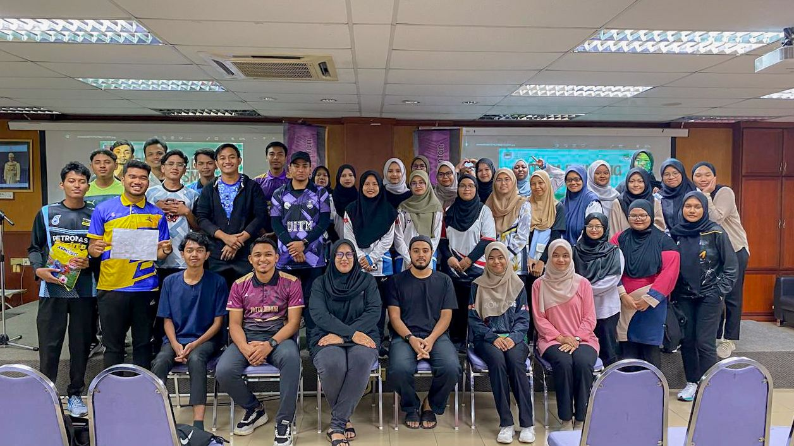

EXPERIENCE
"Every experience makes you grow"

JAWATANKUASA PERWAKILAN KOMANDER KESATRIA (JPKK)
JPKK is one of the uniformed body units found at UiTM Machang. I became a commander since I was in the 3rd semester. There are many advantages to being a commander such as college facilities, allowances and learning a lot of new knowledge. In this organization, I hold the position of Exco for Corporate Relations and Protocol. For me, it's not easy to be a commander because I have to be serious and can't smile while doing my job. However, I enjoy being a commander

ASSOCIATION OF INFORMATION SCIENTISTS (AIS)
AIS is an academic association under the Diploma in Information Management Faculty. In this association, I hold the position of President. I have learned many things after joining this association such as leadership skills, how to make programs and how to communicate. Through this association as well, I have managed to close my relationship with fellow faculty members and also the lecturers. There were many challenges during my time as President, but all of them were a learning process.
SUKARELAWAN PASCA BANJIR UiTMCK
This volunteer mission took place from December 18, 2022 until December 31, 2022. This mission was participated by the Student Representative Council, Commanders, College Representative Committee and ordinary students. All volunteers have been deployed to affected areas around the states of Kelantan and Terengganu. This mission is quite tiring because the condition of the affected house is very bad. However, the cooperation between all the volunteers has made a lot of work easier.